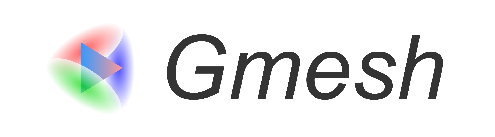
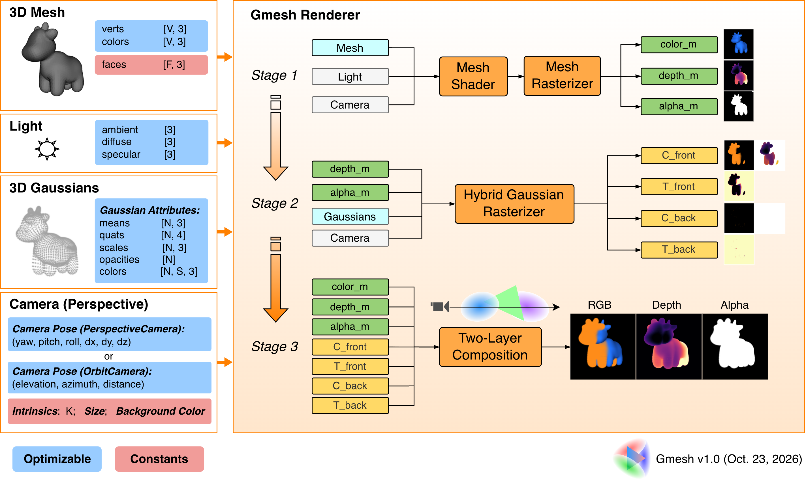

20000 Gaussians are trained from random positions (step 1); a mesh is extracted from them by fusing their depth maps (step 2) and refined (step 3); then 5000 Gaussians are added and trained together with the mesh (step 4). Example 7 in the code.
In the second demo, the final model (the mesh plus 5000 Gaussians) matches new views more closely than the 20000 Gaussians it started from, even when those are trained for as many more iterations, with about a third of the parameters. Test PSNR on 6 held-out views (higher is better):
| Model | Test PSNR (dB) | Parameters |
|---|---|---|
| 20000 Gaussians (step 1) | 30.58 | 280,000 |
| 20000 Gaussians, trained 3500 more iterations | 32.34 | 280,000 |
| 5000 Gaussians alone | 29.06 | 70,000 |
| Mesh (step 3) | 31.25 | 32,376 |
| Mesh + 5000 Gaussians (step 4) | 33.25 | 102,376 |
@software{Yan_GMesh_Differentiable_Hybrid_2025,
author = {Yan, Peizhi},
month = jul,
title = {{GMesh: Differentiable Hybrid Renderer for 3D Gaussians and Meshes}},
url = {https://github.com/PeizhiYan/gmesh},
version = {1.1},
year = {2025}
}